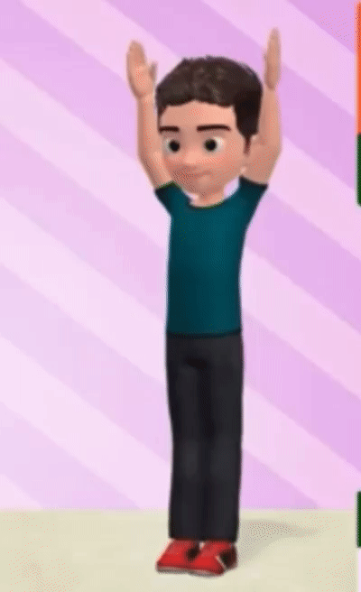
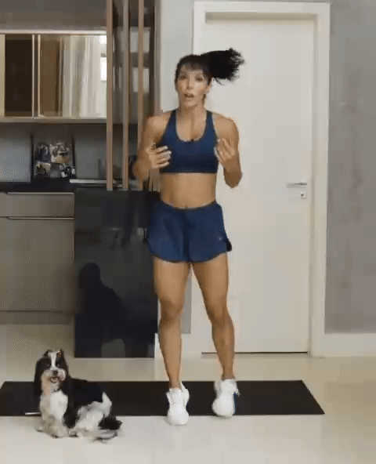
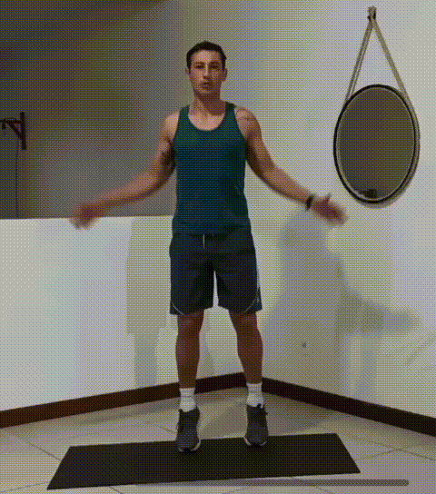
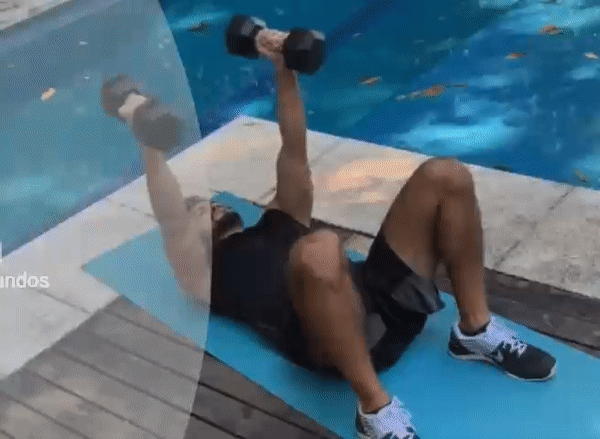
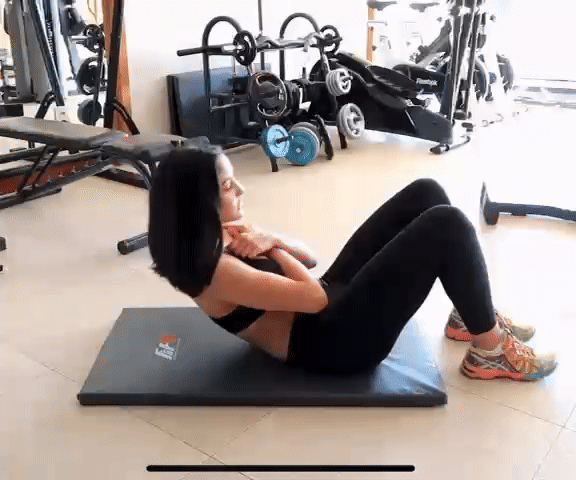
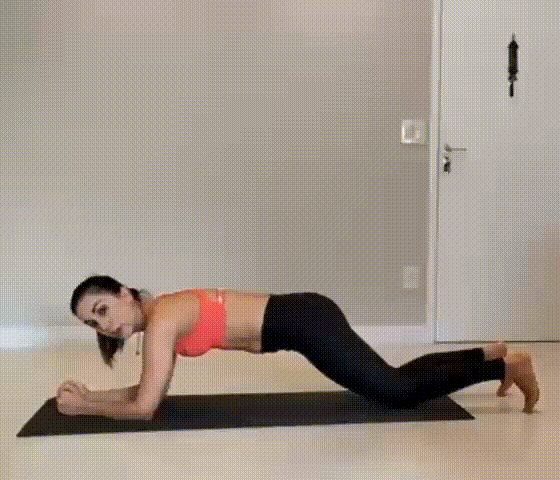

.png)
- Para praticar atividades físicas use roupas e calçados leves e confortáveis.

Nível de treinamento leve
Dicas e Precauções
Roupa
Vá com calma
- Se estiver começando agora a prática de atividades vá aos poucos, sempre respeite os limites de seu corpo.
Hidrate-se
- A ingestão de liquido deve repor a quantidade de líquidos que está indo embora pela transpiração. Sempre leve sua garrafa com água para beber nos intervalos do treino.
Contra indicações
- Caso seja gestante, tenha se submetido a procedimentos cirúrgicos recentemente ou tenha algum problema de saúde como doenças cardiovasculares, diabetes, osteoporose, lesões musculoesquelética ou lesões nas articulações recomendamos que realize os exercícios apenas com o acompanhamento do profissional de educação física.
Aquecimento e Alongamento
- * Antes de iniciar qualquer exercício realize o alongamento e aquecimento do seu corpo para assim prepara-lo para receber os estímulos a seguir.
- High Knee Jacks: Inicialmente em pé, com os braços estendidos a cima da cabeça, comece o movimento elevando o joelho direito e abaixando os braços simultaneamente ao lado do corpo, retorne a posição inicial e repita o movimento elevando o joelho esquerdo;
- 
- Lateral Steps: Inicialmente em pé, com as pernas afastadas na largura dos ombros e braços estendidos a frente do corpo. Inicie o movimento sustentando o peso do corpo na perna direita enquanto cruza a perna esquerda atrás da direita, cruze também os braços a frente do corpo. Retorne a posição inicial e repita o movimento para o outro lado;

- Corrida no lugar: Inicialmente em pé, eleve os joelhos até a altura do quadril alternadamente sem sair do lugar, simulando uma corrida leve;
- 
- Polichinelo: Inicialmente em pé, com braços ao lado do corpo, de saltos no mesmo lugar com movimentos sincronizados, abre-se as pernas enquanto, simultaneamente, levanta-se os braços a cima da cabeça, em seguida com um novo pulo, fecha-se as pernas e os braços, retornando a posição inicial.
- 
Exercícios
Tipo de exercicio: Aeróbico
Caminhada/Corrida
- Não exige habilidades especificas. Você pode iniciar caminhando determinada distancia e aumenta-la ao decorrer da semana, por exemplo, nos 3 primeiros dias caminhe por 1 km, depois aumente para 2 km, 3 km e assim sucessivamente ate atingir seu objetivo diário (Ex. 5 km por dia). Se for iniciar com a corrida comece com o trote e va introduzindo a corrida aos poucos.
- Benefícios: Melhora da circulação sanguínea diminuindo a pressão arterial, aumenta eficiência dos pulmões pois aumenta a troca gasosa isso faz com que uma quantidade maior de impurezas saia do pulmão, combate da osteoporose pois aumenta o estimulo elétrico que facilita a absorção de cálcio, combate a depressão pois é liberado maior quantidade do hormônio endorfina, emagrecer pois aumenta a demanda calórica, previne diabetes pois reverte a resistência à insulina;
- Músculos trabalhados: Esta atividade trabalha os músculos de forma geral.
Ciclismo
- Pedalar ajuda no fortalecimento muscular e perda de peso. Também é uma atividade que ajuda no alivio do estresse. Se a bike tiver regulagem de marcha você pode controlar a intensidade da atividade. Assim como a caminhada e a corrida, você pode definir determinada distancia e ir aumentando gradativamente até alcançar seu objetivo diário (Ex. 5 km por dia).
- Benefícios: Pedalar acelera o metabolismo, ou seja, a queima de calorias será mais rápida, melhora da resistência muscular, proporciona o bem estar pois aumenta a liberação de endorfinas e serotoninas, aumento do folego e fortalecimento dos pulmões, tem baixo impacto nas articulações, reduz o colesterol queimando mais rapidamente o colesterol ruim.
- Importante: Sempre utilizar o equipamento de segurança (cotoveleiras, joelheiras, capacete e luvas).
- Músculos trabalhados: Esta atividade trabalha os músculos de forma geral
- Material: Bicicleta e equipamento de segurança.
Pular corda
- Esta atividade além de ser aeróbica te ajudará a ganhar e melhorar a coordenação motora.
É importante observar e controlar o amortecimento quando retorna ao chão.
Sempre mantenha os braços firmes e o abdômen contraído. Para este treinamento você pode variar a velocidade da rotação da corda e ajustar o tempo da atividade.
Para iniciantes pode começar pulando por 2 minutos e ir aumentando o tempo gradativamente, até alcançar seu objetivo diário (Ex. de 5 minutos por dia) - Benefícios: É uma atividade pratica e bastante completa que proporcionará tonificação da musculatura, melhora o condicionamento físico, queima calorias, desenvolve a coordenação motora, agilidade e equilíbrio e melhora a capacidade cardiorrespiratória.
- Músculos trabalhados: Esta atividade trabalha os músculos de forma geral.
- Material: Corda.
Patins
- Esta pratica irá ajudar a tonificar as pernas, panturrilhas e glúteos e também proporcionará o gasto de calorias. Além disso o passeio de patins pode proporcionar lazer e relaxamento.
- Importante: Sempre utilizar o equipamento de segurança (cotoveleiras, joelheiras, capacete e luvas).
- Benefícios: Por se tratar de uma atividade dinâmica requer que o músculos das coxas, panturrilhas, glúteos e abdômen. Também é um esporte de resistência isso estimula a queima de calorias e estimula todo o sistema cardiovascular, desenvolve os músculos do coração e melhora o fluxo sanguíneo, é um esporte de baixo impacto sendo menos traumático para as articulações, ajuda a desenvolver o senso de equilíbrio.
- Músculos trabalhados: Esta atividade trabalha os músculos de forma geral, mais intensamente o grupo muscular dos membros inferiores (perna, glúteos e panturrilhas).
- Material: Patins e equipamento de segurança.
Importância da Calistenia/Musculação
- A calistenia é a opção ideal para se adotar quando falamos de treinamentos em parques e ao ar livre pois é um conjunto de exercícios físicos onde se usa apenas o peso do próprio corpo. Procura movimentar grupos musculares grupos musculares de maneira natural sem utilização de halteres e similares. A calistenia desenvolve habilidades como força sobre o próprio corpo, equilíbrio, noção espacial e flexibilidade.
- O treinamento calistênico possui movimentos básicos que podem ser adaptados para qualquer nível de aptidão física, o que torna o método bem democrático.
Tipo de exercicio: Membros Inferiores (Realizar de 3 a 4 series com 15 repetições de cada exercício)
Agachamento
- Ereto, mantenha os pés afastados na largura do quadril e bem apoiados no chão;
- Estenda os braços a frente do corpo, mantenha as costas retas. Inspire e inicie o agachamento soltando o ar, abaixe projetando o quadril para tras como se fosse se sentar até as coxas estarem paralelas ao chão, retorne a posição inicial;
- Músculos trabalhados: Quadríceps, glúteos, panturrilhas e posterior da coxa.

Afundo
- Em pé, de um passo a frente com a perna direita. Flexione os joelhos e agache, formando um ângulo de 90°;
- Desça ate que o joelho da perna esquerda quase toque o chão;
- Retorne e repita o movimento 12 vezes, em seguida troque a posição das pernas e repita o movimento mais 12 vezes;
- Músculos trabalhados: Quadríceps, glúteos, panturrilhas e posterior da coxa.

Sentar e Levantar
- Sente-se em um banco, formando um ângulo de 90° com a articulação do joelho;
- Agora inicie o movimento de levantar e sentar no banco;
- Realize o exercício com calma e utilize o apoio das mãos para ter mais estabilidade;
- Retorne à posição inicial;
- Faça três séries de 10 a 12 repetições. Se ficar difícil a execução, uma dica é apoiar os joelhos no chão ao fazer a flexão de braços.
- Músculos trabalhados: Quadríceps, glúteos, panturrilhas e posterior da coxa.

Elevação do Calcanhar
- Em pé, de frente a uma superfície firme (árvore);
- apoie suas mãos nessa superfície, mantendo sua coluna ereta e olhando para frente;
- Mantenha os pes alinhados na largura do quadril voltados para frente;
- Faça movimentos de elevação, apoiando-se nas pontas dos pes e em seguida volte a posição inicial;
- Músculos trabalhados: Quadríceps, glúteos, panturrilhas e posterior da coxa.

Tipo de exercicio: Membros Superiores (Realizar de 3 a 4 series com 15 repetições de cada exercício)
Flexão de Braço em Pé
- Em pé, de frente para uma superfície firme (árvore) a uma distância maior que a dos braços estendidos;
- Incline o corpo e apoie a planta das mãos um pouco mais afastadas do que a largura dos ombros;
- Realize a flexão dos cotovelos levando o tronco em direção a parede e volte.
- Músculos trabalhados: Esta atividade trabalha os músculos de forma geral, mais intensamente o grupo muscular dos membros inferiores (perna, glúteos e panturrilhas)..

Crucifixo Reto
- Deite-se em decúbito dorsal e flexione os joelhos;
- Estenda os braços na lateral do corpo;
- Inicie o movimento juntando as mãos a frente do corpo e retornando-as ao chão.
- Músculos trabalhados: Peito, ombros, tríceps e abdomen.
- 
Abdominal
- Deite-se com a barriga voltada para cima, joelhos flexionados e pés firmes no solo alinhados com seu quadril;
- Inicie o movimento inclinando o tronco para frente como se fosse encostar o peito nos joelhos;
- Retorne ao solo e repita o movimento
- Músculos trabalhados: Abdome, lombar e quadril (região do core).
- 
Prancha Frontal com Apoio do Joelho
- Comece na posição superior de flexão, com braços estendidos sustentando o peso do tronco e as mãos abaixo dos ombros, com os joelhos apoiados no colchonete;
- Contraia o abdômen e mantenha a posição por cerca de 30 segundos;
- Descanse e repita 3 vezes.
- Músculos trabalhados: peito, abdome e ombros ;
- 